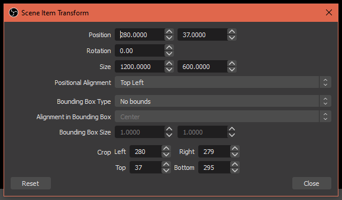

Note: If your browser scene doesn't seem to be working, try disabling browser source hardware acceleration in Settings Advanced Sources Enable Browser Source Hardware Acceleration
Set the URL to https://trpgstuff.com/isaac/chroma
Set the width to 1200 and the height to 600. This can be set to a higher resolution if desired, but try to keep it at or around a 2:1 aspect ratio for best results.
Remove anything in the Custom CSS box.
Optionally, if you're really desperate for performance, you can check the "Use custom frame rate" box, and set it to something as low as 1 FPS, since the randomizer is something that would not need to be updated very often. Note that doing this will make it very annoying to change any settings in the randomizer though.
To interact with the randomizer, right click on the source and click "Interact"
Set any options you want for the randomizer, and then set the version-specific options, such as display type, alignment, text color, and background color. (if applicable)
Note: Alignment has no effect if used with the "Full" display option, and text color only has an effect on the "Plain text" option.
Crop the browser source by holding Alt while clicking on the transform points.
This can also be done manually by right clicking Transform Edit Transform
Add a filter to the source by pressing the Filters button or by right clicking it and selecting Filters
Add the Chroma Key effect filter
Tweak some settings to make the filter look better:
Set Similarity to 250, Smoothness to 300, and Key Color Spill Reduction to 300
To get a new result, interact with the browser source by right clicking Interact, and press the randomize button. That's it!
If you're going to use this in a YouTube video, all I ask is that you put a link to https://trpgstuff.com/isaac in the description of the video. If you're a streamer, then just have the link ready to give out in case anyone wants to use it themselves. Maybe a bot command, or you could just tell it to them. It's not too hard to remember or anything.
Back to the previous page